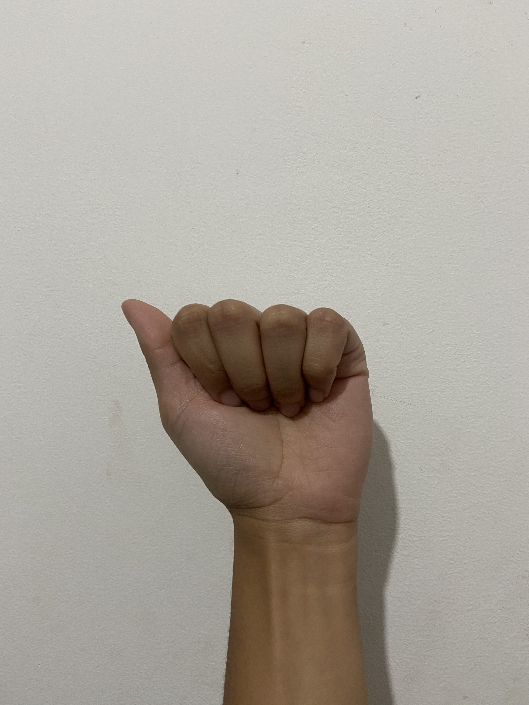

MÓDULO 01
Alfabeto e datilologia
Selecione uma letra, observe a referência e pratique a configuração da mão.
Escolha uma letra
Letra selecionada: A

Adicione a imagem correspondente em
img/alfabeto/
.
Observe a posição dos dedos e a orientação da palma.
Pratique com a câmera
Câmera desligadaA imagem da câmera aparecerá aqui.
O contorno mostra os pontos detectados pelo MediaPipe. Nesta etapa, ele ainda não identifica automaticamente a letra.
Coleta de exemplos
Capture amostras da letra selecionada para montar um conjunto de dados inicial.
Nenhuma amostra capturada.